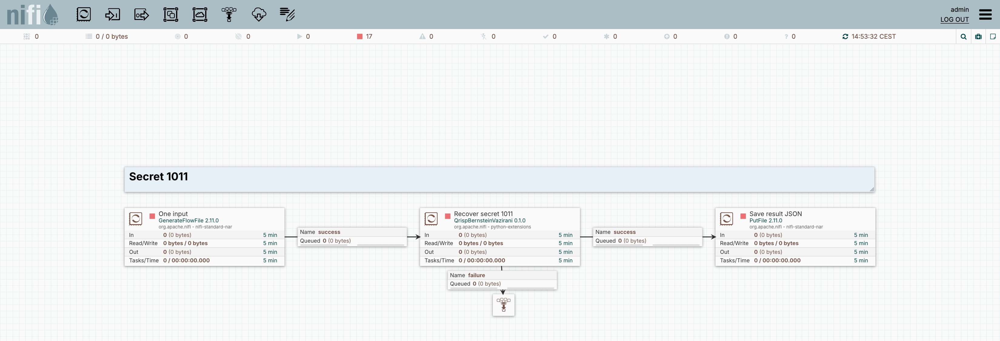

Recover a hidden bitstring
Recover the configured secret 1011 through phase kickback and measurement.
1. The problem and the dataflow
Recover a hidden four-bit string from an oracle for its parity function. The Secret Bitstring property configures the oracle as 1011. The algorithm uses four query qubits and one ancilla; the configured string is ground truth for checking the result, not an unknown value supplied by an external oracle.
- 01Create inputOne empty JSON FlowFile triggers the case.
- 02Recover the stringQrispBernsteinVazirani builds the oracle, applies phase kickback and simulates.
- 03Save distributionPutFile writes the recovered-string probabilities.
| Boundary | Data and meaning |
|---|---|
| Input | Empty JSON content; Secret Bitstring = 1011 and Shots = 1024 are properties. |
| Output content | A JSON probability distribution over four-bit strings. |
| Output attributes | bv.found_bitstring, bv.secret_bitstring, bv.match. |
| Qubit convention | Leftmost bit is query qubit 0; the measured register excludes the ancilla. |
RQ1 capability: Encapsulate circuit construction and local simulation in an interchangeable algorithm component.
2. The actual NiFi canvas

3. Inspect the configuration
The following values come from the same specification used to create the NiFi processors.
Secret 1011
QrispBernsteinVazirani — properties
| Property | Configured value |
|---|---|
| Secret Bitstring | 1011 |
| Shots | 1024 |
Each source creates one JSON input using Run Once (an explicit edge list for MIS, otherwise an empty object). The algorithm parameters are processor properties. PutFile saves the returned probability distribution. The portable flow export uses ./supplementary-results as its output directory. Algorithm failures route to visible inspection queues.
4. Saved execution and independent check
The saved result is 1011 with probability 1. The independent checker compares the measured outcome to the configured secret, and also checks the processor’s match attribute. This demonstrates the configured algorithm pipeline on one input.
Secret 1011
Captured 2026-09-14T11:57:13.875695+00:00. Values are probabilities returned by Qrisp, not integer shot counts. The Shots property was 1024.
Read the machine-readable checks · Inspect the independent checker
5. Reproduce or inspect the implementation
Import the downloadable process group into NiFi with the supplied Python processors installed. Review its output directory, start the downstream processors, and use Run Once on each source. The exported processors are stopped by default.
For exact commands and version details, see the reproduction guide. Installation is optional for reviewing the screenshots, configuration tables, and saved results on this page.